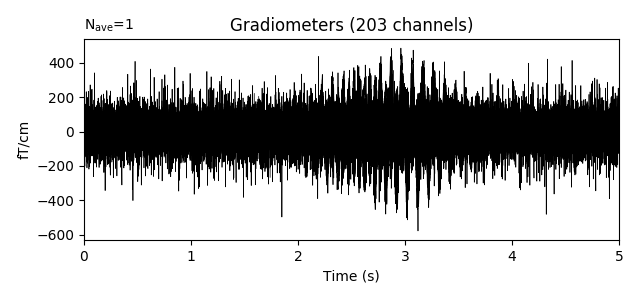
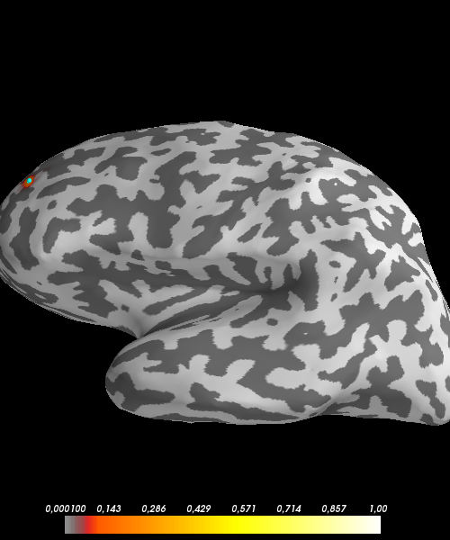
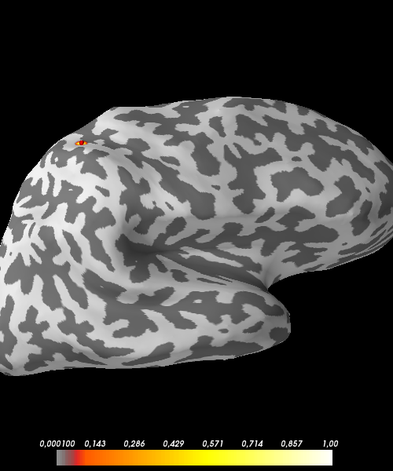

Note
Click here to download the full example code
Compute SESAME inverse solution on simulated data in the frequency domain¶
In the present example we shall devise a synthetic scenario in which two dipolar sources are active in the cortex. The source time courses are 10 Hz sinusoids, each modulated by a Gaussian. Simulated MEG recordings are then corrupted by empty room noise.
We shall use SESAME in the frequency domain 1 and see if we can find our two simulated sources.
References¶
- 1
G. Luria et al., Bayesian multi-dipole modelling in the frequency domain. J. Neurosci. Meth., 312 (2019) 27–36
# Author: Gianvittorio Luria <luria@dima.unige.it>
#
# License: BSD (3-clause)
import os.path as op
import numpy as np
from scipy.signal import welch, coherence
from matplotlib import pyplot as plt
from mayavi import mlab
import mne
from mne.datasets import sample
from mne.label import _n_colors
from sesameeg import Sesame
# We use the MEG and MRI setup from the MNE-Python
# sample dataset
data_path = sample.data_path(download=False)
subjects_dir = op.join(data_path, 'subjects')
subject = 'sample'
meg_path = op.join(data_path, 'MEG', 'sample')
raw_fname = op.join(meg_path, 'sample_audvis_raw.fif')
fwd_fname = op.join(meg_path, 'sample_audvis-meg-eeg-oct-6-fwd.fif')
erm_fname = op.join(meg_path, 'ernoise_raw.fif')
erm_cov_fname = op.join(meg_path, 'ernoise-cov.fif')
# Seed for the random number generator
rand = np.random.RandomState(42)
Load the info, the forward solution and the noise covariance The forward solution also defines the employed brain discretization.
Out:
Read a total of 3 projection items:
PCA-v1 (1 x 102) idle
PCA-v2 (1 x 102) idle
PCA-v3 (1 x 102) idle
Reading forward solution from /home/sara/mne_data/MNE-sample-data/MEG/sample/sample_audvis-meg-eeg-oct-6-fwd.fif...
Reading a source space...
Computing patch statistics...
Patch information added...
Distance information added...
[done]
Reading a source space...
Computing patch statistics...
Patch information added...
Distance information added...
[done]
2 source spaces read
Desired named matrix (kind = 3523) not available
Read MEG forward solution (7498 sources, 306 channels, free orientations)
Desired named matrix (kind = 3523) not available
Read EEG forward solution (7498 sources, 60 channels, free orientations)
MEG and EEG forward solutions combined
Source spaces transformed to the forward solution coordinate frame
306 x 306 full covariance (kind = 1) found.
Read a total of 3 projection items:
PCA-v1 (1 x 102) active
PCA-v2 (1 x 102) active
PCA-v3 (1 x 102) active
In this example, to save computation time, we shall only simulate gradiometer data. You can try simulating other types of sensors as well.
picks = mne.pick_types(info, meg='grad', stim=True, exclude='bads')
mne.pick_info(info, picks, copy=False)
fwd = mne.pick_channels_forward(fwd, include=info['ch_names'])
noise_cov = mne.pick_channels_cov(noise_cov, include=info['ch_names'])
Out:
203 out of 366 channels remain after picking
Data simulation¶
The following function generates a timeseries that contains an oscillator, modulated by a Gaussian. The frequency of the oscillator fluctuates a little over time, but stays close to 10 Hz.
def gen_signal(times, base_freq, rand=None, t_rand=1e-3, std_rand=0.1, g_sigma=None, g_mu_shift=None):
"""Generate an oscillating signal with a Gaussian envelope.
Parameters
----------
times : array
Times
base_freq : float
Base frequency of the oscillators in Hertz
t_rand : float
Variation in the instantaneous frequency of the signal
std_rand : float
Std-dev of the random fluctuations added to the signal
g_sigma : float
Standard deviation of the enveloping Gaussian
g_mu_shift: float
Shift (in seconds) of the mean of the enveloping Gaussian with respect to the
middle of the time window
Returns
-------
signal : ndarray
The generated signal.
"""
n_times = len(times)
mu_0 = np.floor(times.shape[0] / 2)
mu_shift = int(g_mu_shift * sfreq)
mu = int(mu_0 + mu_shift) / sfreq
gauss = np.exp(-np.power(times - mu, 2.) / (2 * np.power(g_sigma, 2.)))
if rand is not None:
# Generate an oscillator with varying frequency and phase lag.
signal = np.sin(2.0 * np.pi * (base_freq * np.arange(n_times) / sfreq +
np.cumsum(t_rand * rand.randn(n_times))))
# Add some random fluctuations to the signal.
signal += std_rand * rand.randn(n_times)
else:
signal = np.sin(2.0 * np.pi * (base_freq * np.arange(n_times) / sfreq +
np.cumsum(t_rand * np.random.randn(n_times))))
signal += std_rand * np.random.randn(n_times)
# Scale the signal to be in the right order of magnitude (~100 nAm)
# for MEG data.
signal *= 100e-9 * gauss
return signal
We now simulate two timeseries and plot some basic information about them.
sfreq = info['sfreq']
n_sample = int(round(5. * sfreq))
times = np.arange(n_sample) / sfreq
signal1 = gen_signal(times, 10., g_sigma=.5, g_mu_shift=0)
signal2 = gen_signal(times, 10., g_sigma=.5, g_mu_shift=.5)
q = np.vstack((signal1, signal2))
fig, axes = plt.subplots(2, 2, figsize=(8, 4))
# Plot the timeseries
ax = axes[0][0]
ax.plot(times, 1e9 * signal1, lw=0.5)
ax.set(xlabel='Time (s)', xlim=times[[0, -1]], ylabel='Amplitude (Am)',
title='Signal 1')
ax = axes[0][1]
ax.plot(times, 1e9 * signal2, lw=0.5, color = 'r')
ax.set(xlabel='Time (s)', xlim=times[[0, -1]], title='Signal 2')
# Power spectrum of the first timeseries
f, p = welch(signal1, fs=sfreq, nperseg=128, nfft=256)
ax = axes[1][0]
# Only plot the first 100 frequencies
ax.plot(f[:100], 20 * np.log10(p[:100]), lw=1.)
ax.set(xlabel='Frequency (Hz)', xlim=f[[0, 99]],
ylabel='Power (dB)', title='Power spectrum of signal 1')
# Compute the coherence between the two timeseries
f, coh = coherence(signal1, signal2, fs=sfreq, nperseg=100, noverlap=64)
ax = axes[1][1]
ax.plot(f[:50], coh[:50], lw=1.)
ax.set(xlabel='Frequency (Hz)', xlim=f[[0, 49]], ylabel='Coherence',
title='Coherence between the timeseries')
fig.tight_layout()
Now we put the signals at two locations on the cortex. To do so, we construct
a mne.SourceEstimate object to store them in.
# The locations on the cortex where the signal will originate from are
# indicated as source space grid points indices.
vertices = [[146374], [33830]]
vertno = np.hstack([fwd['src'][0]['vertno'], fwd['src'][1]['vertno']])
true_locs = list()
for v in vertices:
true_locs.append(np.where(vertno == v[0])[0][0])
# Construct SourceEstimates that describe the signals at the cortical level.
stc_signal = mne.SourceEstimate(q, vertices, tmin=0, tstep=1. / sfreq, subject='sample')
Now we run the signal through the forward model to obtain simulated sensor data. We then corrupt the resulting simulated gradiometer recordings by empty room noise.
evoked = mne.apply_forward(fwd, stc_signal, info)
mne.simulation.add_noise(evoked, noise_cov, random_state=rand)
Out:
Average patch normals will be employed in the rotation to the local surface coordinates....
Converting to surface-based source orientations...
[done]
/home/sara/Documenti/sesameeg/examples/plot_meg_simulated_sesame_frequency.py:182: RuntimeWarning: The maximum current magnitude is 132.9 nAm, which is very large. Are you trying to apply the forward model to noise-normalized (dSPM, sLORETA, or eLORETA) values? The result will only be correct if currents (in units of Am) are used.
evoked = mne.apply_forward(fwd, stc_signal, info)
Projecting source estimate to sensor space...
[done]
Adding noise to 203/203 channels (203 channels in cov)
<Evoked | '' (average, N=1), [0, 4.9982] sec, 203 ch, ~8.0 MB>
Visualize the data
Out:
<Figure size 640x300 with 1 Axes>
Define the parameters and apply SESAME. We convert the data to the frequency
domain by setting Fourier_transf=True.
n_parts = 100
noise_std = None
dip_mom_std = None
freq_min = 9.5
freq_max = 10.5
_sesame = Sesame(fwd, evoked, n_parts=n_parts, noise_std=noise_std,
top_min=freq_min, top_max=freq_max, dip_mom_std=dip_mom_std,
hyper_q=True, Fourier_transf=True)
_sesame.apply_sesame()
print(' Estimated number of sources: {0}'.format(_sesame.est_n_dips[-1]))
print(' Estimated source locations: {0}'.format(_sesame.est_locs[-1]))
print(' True source locations: {0}'.format(true_locs))
# Compute goodness of fit
gof = _sesame.goodness_of_fit()
print(' Goodness of fit with the recorded data: {0}%'.format(round(gof, 4) * 100))
# Compute source dispersion
sd = _sesame.source_dispersion()
print(' Source Dispersion: {0} mm'.format(round(sd, 2)))
Out:
Computing inverse operator with 203 channels.
203 out of 203 channels remain after picking
Computing neighbours matrix...[done]
Computing neighbours probabilities...[done]
Data have been converted to the frequency domain.
Analyzing data from 9.6002 Hz to 10.4003 Hz
Estimating dipole moment std...[done]
Estimated dipole moment std: 2.1324e-05
Sampling hyperprior for dipole moment std.
Estimating noise std...[done]
Estimated noise std: 2.6368e-09
Computing inverse solution. This will take a while...
Estimated dipole strength variance: 9.2037343747418e-06
[done]
Estimated number of sources: 2
Estimated source locations: [4367 3554]
True source locations: [3554, 4367]
Goodness of fit with the recorded data: 92.41%
Source Dispersion: 1.4 mm
Visualize the posterior map of the dipoles’ location
 and the estimated sources on the inflated brain.
and the estimated sources on the inflated brain.
est_n_dips = _sesame.est_n_dips[-1]
est_locs = _sesame.est_locs[-1]
colors = _n_colors(est_n_dips)
stc = _sesame.compute_stc(subject)
clim = dict(kind='value', lims=[1e-4, 1e-1, 1])
brain = stc.plot(subject, surface='inflated', hemi='split', clim=clim,
time_label=' ', subjects_dir=subjects_dir, size=(1000, 600))
nv_lh = stc.vertices[0].shape[0]
for idx, loc in enumerate(est_locs):
if loc < nv_lh:
brain.add_foci(stc.vertices[0][loc], coords_as_verts=True,
hemi='lh', color=colors[idx], scale_factor=0.3)
else:
brain.add_foci(stc.vertices[1][loc-nv_lh], coords_as_verts=True,
hemi='rh', color=colors[idx], scale_factor=0.3)
mlab.show()
- 
- 
Out:
Surface stc computed.
Total running time of the script: ( 5 minutes 57.392 seconds)